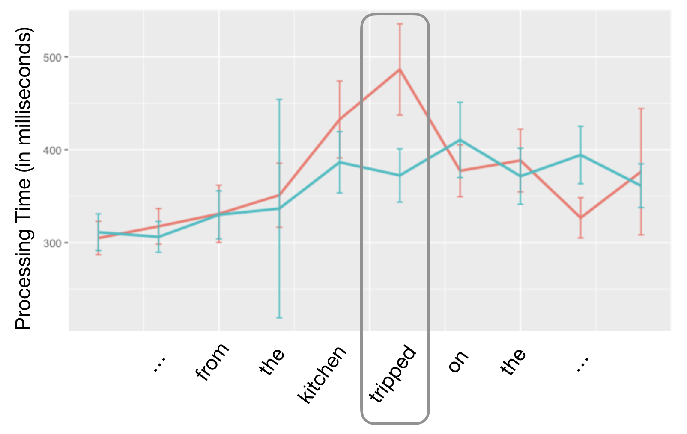

I love teaching, and find that it is also an incredible way for me to learn. I am a big believer in visual diagrams, especially when they are drawn out larger than life on the blackboard. I try to incorporate as much tech as I can into my teaching, for example the image below is a self-paced-reading study me and my students did in class. It shows the classic garden-path effect for a Main Verb / Reduced Relative clause (MV/RR) gardenpath sentence. It was really valuable to demonstrate how linguistic experiments and data analysis were carried out in real time!
• The woman brought the sandwich from the kitchen tripped on the new carpet.
• The woman who was brought the sandwich from the kitchen tripped on the new carpet.

Teaching Experience (as a TA)
• Quantitative Methods in Linguistics (Harvard, Spring 2020)
• Computational Psycholinguistics (MIT, Spring 2020)
• Introduction to Linguistics (Harvard, Fall 2020)
Here's an article from the Harvard Crimson about the Spring 2020 move to online teaching, with quotes from me near the end.